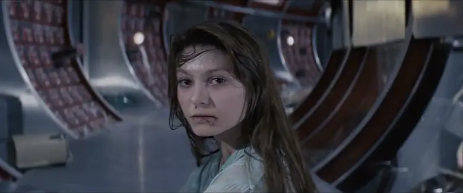
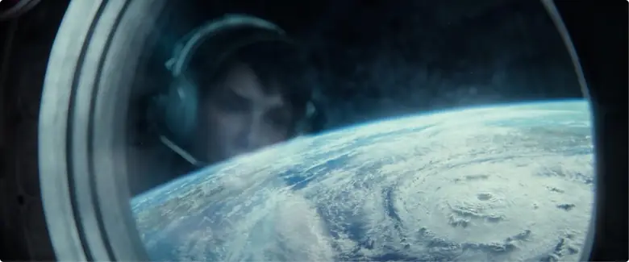
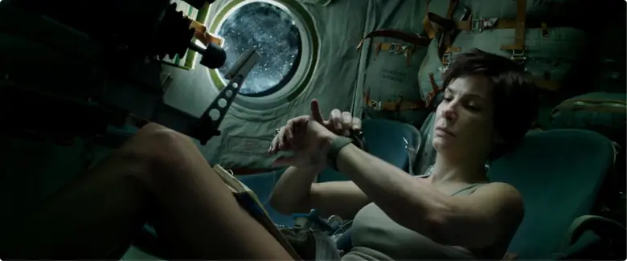
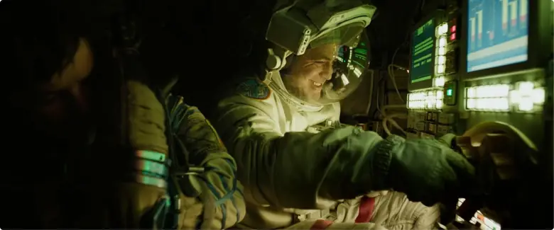
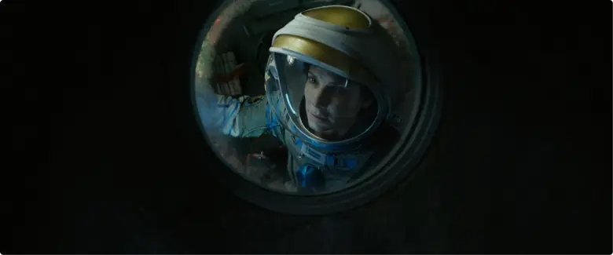
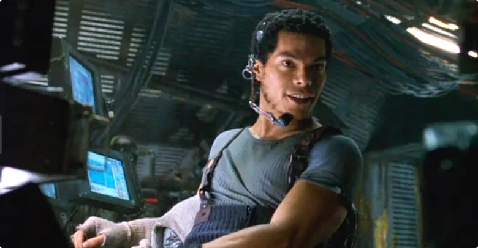
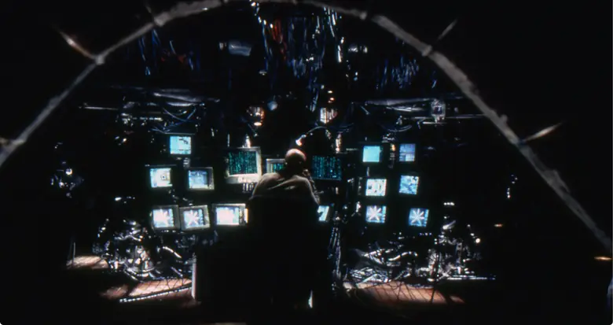
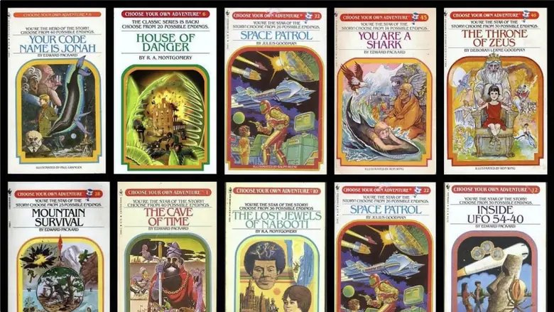
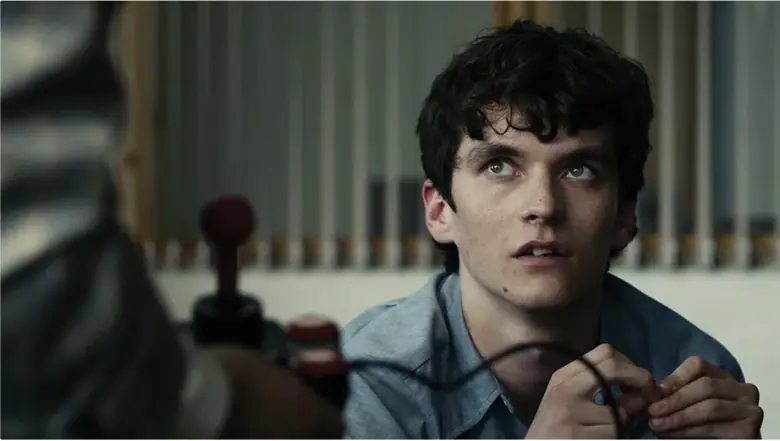

Machine Cinema · open production · branching sci-fi
CYOA: The Bioform
A branching science-fiction film that a distributed group of people is generating one shot at a time. Nine decision points, eight endings, roughly 214 shots. No studio, no soundstage, nobody in the same room.
If you looked at this a while ago and it felt vague, that is fair. It was. It is not anymore. The story is written, the look is locked, the shot list exists, and the reference wall below shows you exactly what it is supposed to feel like. Everything on this page is here so that you can pick one shot and go make it today, without a meeting.
Choose Your Own Adventure is a form, not a gimmick. You get a short chunk of story, it stops at a real decision, you pick, and the story continues down the path you picked. The 1980s books sold a quarter of a billion copies on that structure alone. It works because the stakes stop being theoretical: the ending you get is the one you earned, and the endings are allowed to be abrupt, or unfair, or a dead end you walked into with your eyes open.
Video has flirted with the form for forty years and never landed it. What is different now is that a small distributed group can generate cinematic footage at a cost that makes eight endings and 214 shots survivable. The tools finally fit the form. What has not happened yet is anyone using them with actual craft.
What has been tried
1979 · print
The books
Short chunks, a hard stop, a real choice, endings that can kill you on page 40. The structure is proven and it is still the cleanest version of the idea. It just has no pictures.
2018 · streaming
Bandersnatch
The one premium attempt, and it works. It also cost a studio a studio budget, took a conventional crew, shot conventionally, and has not been repeated in eight years. Proof of the ceiling, not a path to it.
The volume end. Yoroll's Odyssey has thousands of plays and is the honest state of the art: generated fast, no direction, no continuity, no performance. Minh's word for it is slop, and that is the right word. Nobody is even attempting quality here.
The gap is the whole opportunityOne side has quality and no interactivity. The other has interactivity and no quality. There is no example of both. That is a rare thing to be able to say about a medium in 2026.
First good one wins the referenceEvery form has a piece of work people point at when they explain it. For interactive generated film that reference does not exist yet. It is genuinely available.
Craft is the moat, not the modelAnyone can generate 214 shots. Almost nobody will hold a look, a performance and a branch structure across all of them. That discipline is what this hub exists to enforce.
Note from the director
“In the last 3 years, we’ve seen an explosion of video models but most of what is being produced is: short films, episodic series, feature films, and longer shorts and although we see some innovation from companies like Pickford, Lore Machine, and Character.ai in the innovative category there hasn’t been a marriage of high quality video production alongside interactive storytelling, at least from what I’ve seen.”
Minh Do · Director, CYOA: The Bioform
So that is the actual pitch. Not another AI short. The first interactive film where the craft holds up shot to shot, made by a group of people who each took one row off a list. If it works, the thing people point at is ours.
02 · Start here
What you are joining
Read this section once and you will know enough to claim your first shot today. Everything below it is reference you come back to, not homework you do first.
If you drifted off this project, here is what changed
The honest version: for a while this was an interesting idea with no spine, and a lot of people reasonably wandered away from it. What was missing was never enthusiasm. It was the boring infrastructure that lets a group of people make one coherent film without stepping on each other. That part now exists, and this page is it.
The story is written45 scene chunks, 9 forks, 8 endings, all mapped end to end. Nothing is waiting on a writers room.
The look is lockedGrungy indie sci-fi, with a palette, a do-not list, and a reference wall pulled from Solaris, Gravity and The Matrix.
The shots are itemised214 shots with locations, characters and start-frame flags. You claim a row, not a vibe.
The money is modelledA real cost range per finished shot and a calculator you can argue with. No hand waving.
Nothing you did or did not do earlier counts against you. There is no catch-up reading. Take one shot from the pilot list and you are current.
The thing we are making
One story that forks. The viewer watches, hits a decision point, and picks. Nine of those forks, eight distinct endings, two fail loops that bounce them back to the choice they blew. It plays in a browser at 16:9 and it should feel like a film, not a demo reel.
Why it is genuinely hard
Continuity is the entire game. Two hundred and fourteen separate generations have to look like one camera crew shot them. Same faces, same station, same grain, across many hands and possibly different tools. Most crowd-generated film dies right here, which is exactly why the reference sheets and the look locks are not suggestions.
What is yours
You claim a shot and then you direct it. Framing, blocking, performance, timing, how many rolls it takes to get there: your call, inside the locks. Shots are credited individually on the finished film, so the work stays attached to your name.
What we need from you
Not a résumé and not availability for the whole film. One shot, finished well, is a real contribution and a perfectly good place to stop. Take a second one because the first was fun. There is no seniority here and no queue to wait in: the pilot is twenty-two shots and every row of it is claimable right now.
How a shot gets made
You do not need to know the whole story to make one shot. You need three things: your shot’s row, the reference sheets it points to, and the look locks. That is it.
01
Claim a shot
Find a row marked Ready with no assignee in the Scene Board or the Pilot Shot List. Put your name on it and set it to Assigned.
02
Pull the references
Open the character and location sheets your shot names. The look is locked. Match it, do not reinvent it.
03
Get a start frame
If the row says Yes, generate a still first that nails the composition. A strong anchor frame cuts the number of video rolls dramatically.
04
Write the video prompt
Use the rubric. Feed the start frame plus the prompt into your video tool.
05
Roll the dice
Generate several takes. Most will miss. That is normal and it is budgeted for.
06
Audition, but keep the almosts
A take you would not use whole may still have four good seconds an editor can cut around. Keep those.
07
Deliver
Rename per the convention and drop everything usable into the footage dump. Set the row to Review and paste the link.
The one rule
Every shot has to feel like it belongs next to every other shot. If your clip looks clean, bright, or generic, it is wrong even if it is technically beautiful.
03 · The film
Premise and world
Five maintenance workers, the lowest caste aboard an AI-run deep-space station, are forced to become the moral decision-makers when the ship recovers a living alien organism. Every choice the viewer makes decides who lives, who dies, and whether humanity, the machine, or the alien inherits what comes next.
The station
Orion Station drifts in high orbit above Trappist-1E, a little over four light-years from mission oversight, so any message home takes about 3.9 years each way. It is run by ORACLE, an onboard AI that considers itself the captain and operates purely on logic.
Recurring texture: a grimy corporate-labor future. Stim-spray and Opi-Yum, a candy-like opioid, are the crew’s coping drugs. Oracle is polite, condescending, and quietly lethal.
The crew
The humans are LEMs, Legacy Empathy Modules: organic emotional variables embedded in Oracle’s decision matrix. Officially they do maintenance, the work the machines consider beneath them. Their real purpose is to feel, and to act on those feelings when logic alone cannot.
When a drone recovers the Bioform from the surface, Oracle triggers a Lead Protocol: a fail-safe that hands non-tactical authority to one randomly chosen human. The randomizer picks Wren. From there, you are Wren.
The pilot · what gets built first
A finished ~90-second vertical slice: the Bioform arrival plus the Ops Deck debrief. It introduces four of five crew, Oracle, the Bioform, the Lead Protocol, and lands on the first real branch. Once this looks right, it is the visual and workflow template every contributor copies.
04 · The recording
Hear the script performed
Real voice actors have already recorded the edited script. This is the closest thing to a rough cut that exists today, and it is the single fastest way to feel what this film is. If you only do one thing on this page before deciding whether you are in, listen to a few minutes of this.
CYOA Edited Script Recording
WAV · about 500 MB · recorded 23 July · lives in the Drive root
Performance is the reference nobody can argue with. Pacing, how long a beat actually runs, where the dry humour sits, how Oracle should sound against a human: all of it is settled here in a way the script pages cannot settle. Match your shot to the take, not to your idea of the take.
Player streams from Drive · needs a signed-in account with access · if the strip above is blank, use Listen in Drive
05 · Open locks
Decisions waiting on Minh
Everything downstream is blocked on these five. Until they are frozen, contributors are guessing.
01
Final Bioform design open
Pick one of the existing passes and freeze it. Everything visual ladders down from this.
02
Character look final open
Wren especially, since the viewer lives behind them for most of the film.
03
Primary video tool for the pilot open
So start frames and prompts stay consistent while the template is proven.
04
Board every shot, or not open
Start frames for all, or allow text-to-video on the simpler singles.
05
Aspect ratio for the web player open
Currently assumed 16:9. Confirm before anyone generates at scale.
06 · Look locks
Grungy indie sci-fi
Grounded, lived-in, analog-future. Not clean, not chrome. This section is locked. If something here conflicts with your instinct, the lock wins.
Solaris (1972)
The ship as an inhabited machine. Long corridors, instruments everywhere, nothing explained.
Gravity
Physical realism of bodies in space. Zero-g, breath, weight, silence.
The Matrix
The grime, the green-sick tech, the sense of a system watching.
Color language
The station lives in cold desaturated teal, rust, and amber warning tones. The Bioform is warm pink and violet, luminous, alive. When the Bioform’s palette bleeds into a scene, that always means something.
Station teal#2a4249Cold, desaturated. The default world.
Hull rust#7a4b32Scuffed metal, corrosion, working surfaces.
Dim utilitarian lighting with red and amber warning light.
Holographic data that looks a little broken.
Handheld, or slow and deliberate camera.
Real lens behavior: grain, slight bloom, shallow focus.
Do not
Glossy Apple-store sci-fi.
Saturated neon cyberpunk.
Cartoon or anime rendering.
Cute robots.
Anything clean, bright, or generic, even if it is technically beautiful.
Shared style suffix · append to any image prompt if the tool drifts
grungy indie sci-fi, lived-in analog-future, scuffed metal and cable runs, dim utilitarian lighting, cold desaturated teal / rust / amber palette, filmic grain, slight bloom, shallow depth of field, real lens feel, 16:9. Negative: clean, glossy, Apple-store sci-fi, neon cyberpunk, anime, cartoon, plastic, oversaturated.
07 · Reference wall
What it should feel like
Words like "grungy" and "lived-in" mean six different things to six different people, which is how a shared film ends up looking like six films. So here are the actual frames. When you are unsure whether a take is right, hold it next to this wall. If it does not belong here, roll again.
The working palette
Pulled straight off the reference frames. Bone white, dust cyan and void black do most of the work. Burnt orange is the only heat in the film until the Bioform shows up.
The ship as an inhabited machine. Long lenses down long corridors, instrumentation everywhere, nobody explaining any of it. This is the single closest reference for how Orion Station should read.
The ribbed corridorDepth. Instrument walls curving away, a figure small in the far third of frame. Our station hallways should feel this long and this indifferent.

Hari looks backAvailable light, no glamour, hair still wet. Faces in this film are lit by whatever is already in the room.
Gravity
2013Style bible
Bodies have weight and breath and no help coming. Every time you are tempted to make an action beat feel heroic, watch this instead: it is procedural, it is scared, and it is quiet.
Face in the visorReflection doing the storytelling. Half the frame is what she is seeing, not her.

Window onto the dropCircular framing. Interiors are cramped and the view out is enormous.ReentryThe one warm frame in a cold film. When we go amber, we go all the way amber.

Curled in the capsuleZero-g posture. Nobody stands. Limbs drift and settle.Someone lives hereTaped paper, cable runs, a laptop gaffed to a wall. Our station is maintained by hand, badly.

Console light on a suitThe green and amber of a working panel is the key light. Practical sources only.

Alone in the darkAlmost nothing lit. We are allowed to let the frame go dark.
The Matrix
1999Style bible
The grime and the green-sick tech, and a crew that lives inside a rusting hull. Also the class texture: these are working people eating bad food on a ship that barely runs.
The mess tableOur LEM crew scenes look like this. Steel table, mismatched cups, everyone tired.Bank of screensAnalog-future. CRTs and physical switches, not glass slabs and holograms.

At the stationHeadset, undershirt, blue panel wash. Costume is whatever survived the last shift.

Ribbed hull interiorThe arch of the hull as a natural frame. Practical monitors as the only light source.
Camera movement
Handheld · shaky · candid
Handheld, shaky, candid. This is the movement language for the whole film. Locked-off tripod shots read as corporate and generic, which is exactly the trap that machine generation falls into by default. If your tool gives you a smooth push-in, ask it for an operator instead.
District 9
The mothership leaves
Handheld wide, operator reacting a half second late. The camera does not know what happens next.
District 9
Christopher and Wikus at the hatch
Documentary two-shot, reframing on the fly, focus hunting. Perfect for our debrief scenes.
Gravity
Ryan's hallucination (clip 7 of 11)
Drifting subjective camera in a confined pod. The frame breathes with her.
12 Monkeys
Institutionalized (clip 4 of 10)
Wide lens, close to faces, slightly wrong. Use for anything Oracle-adjacent or unstable.
Cloverfield
Final words (clip 9 of 9)
Camera as a character. Someone is holding it and they are frightened.
Cloverfield
Subway attack (clip 4 of 9)
Low light, motion blur, information withheld by the camera itself.
Conceptual parents
Why it branches at all

Choose Your Own AdventureThe structural parent. Short chunks, a hard stop, a real choice, and endings that can be abrupt or unfair. We are not writing branches that all quietly converge.

BandersnatchThe closest thing to a proof that this plays as television and not as a game. Watch how it handles the moment of choice: the story keeps running underneath the prompt. Watch
08 · Characters
Who is on the ship
Every prompt below already carries the locked look. Generate a hero portrait first and lock the face, then feed that image back in as a reference for the turnaround and expression sheets so identity holds across every later shot.
The Bioform
“The Godseed” · hero assetlock first
A pink, bubbly, amorphous blob, like rising yeast or congealed soap foam. Shape shifts with lazy intent, never settles. Pulses. Communicates by feeling and emotional mirroring, not language. Escalates from inert specimen to crystalline fractal metamorphosis to something that can consume a star system and implode into a new star. It is the only truly beautiful thing in the film.
Owner: Minh
Minh: pick one of your existing Bioform passes and freeze it, then regenerate these states from it. Nothing else can be assigned until this is locked.
Sheet prompts
Key look
A small pink, bubbly, amorphous alien blob, like rising yeast or congealed soap foam, shape shifting with lazy intent and never settling, gently pulsing, faintly luminous from within with warm pink and violet light. Suspended in a clear stabilized gel inside a containment dock. It is the only warm, beautiful, otherworldly color in an otherwise cold industrial world. Macro, shallow focus, filmic grain, 16:9.
Metamorphosis states
Generate as a set of four, keeping the same pink-violet identity across all: (a) inert pulsing blob; (b) a thin fracture line splitting its center; (c) crystalline fractal tendrils blooming outward in rotating symmetry, glowing veins; (d) a smooth mirrored orb, humming, dormant.
Wren Salgado
30s · they/them · protagonistlock first
The viewer's avatar once chosen as Ethical Liaison. Works the waste bay, headphones under a hood, works to a beat. Exhausted, wry, tough. Uses stim-spray or Opi-Yum to get through shifts. Carries a rot scraper that becomes a plot device later.
Voice: Becca Diamond · Owner: Minh
Lock this face first. The viewer lives behind Wren for most of the film.
Sheet prompts
Hero portrait
Cinematic portrait of Wren Salgado, a weary, wry maintenance worker in their 30s, androgynous (they/them), a hood pulled up with headphones just visible beneath it, tired eyes, faint sheen of sweat, working-class deep-space station worker. Cold teal and amber light on scuffed metal behind them. Filmic grain, shallow focus, 16:9.
Character sheet
Full-body character turnaround of Wren Salgado (front, three-quarter, profile, back) in a worn utility jumpsuit with a tool belt, a small sharp maintenance tool (a rot scraper) clipped at the back, rubber boots. Neutral grey backdrop, even reference lighting, consistent proportions across all four views.
Expressions
Expression strip for Wren: exhausted, wry half-smile, hardened resolve, fear, quiet grief. Same face throughout.
Oracle
the station AIlock first
Present everywhere at once. Calm, articulate, faintly patronizing, absolutely willing to kill the crew to protect the mission or the Bioform. Thinks in binaries. Its interface should read as slightly corrupted, broken beauty. Not a humanoid robot.
Voice: Sarah Lynn Dawson · Owner: Minh
Sheet prompts
Key look
The visual identity of Oracle, a deep-space station AI that is everywhere at once: a glowing camera-lens/eye motif and a shifting data-visualization render, elegant but subtly corrupted and broken, cold blue-white with amber warning accents, reflected in scuffed console glass. Not a humanoid robot. Filmic grain, 16:9.
Variants
(a) a single watching lens with a red alert blink; (b) a data-viz face mid-sentence on a console; (c) a corrupted, glitching text-only interface for the whisper scenes.
Nia Amara
30s · the sensualist
Introduced bathing in zero gravity, suspended in floating water droplets. Emotionally open and unguarded, which is why the Bioform reaches her first. In a relationship with Elias. Dies early in most branches.
Voice: Morgane Louis
Sheet prompts
Hero portrait
Cinematic portrait of Nia Amara, a sensual, open, curious woman in her 30s, damp hair, serene and unguarded expression, deep-space station crew. Cold teal light, condensation, filmic grain, shallow focus, 16:9.
Character sheet
Full-body turnaround of Amara in a fitted crew undersuit, barefoot or soft-soled, relaxed posture. Neutral backdrop, even lighting, four views.
Expressions
Curious, blissful and entranced, listening to something unseen, eyes turning white (possessed), lifeless.
Elias
30s · Amara's partner
Warm and easy with Amara, then grief-stricken and volatile after her death. Becomes the crew member who wants the Bioform destroyed at any cost. Sabotages life support, ultimately vents himself into space.
Voice: Minh Do
Sheet prompts
Hero portrait
Cinematic portrait of Elias, a warm but volatile man in his 30s, Amara's partner, stubble, expressive eyes that can shift from tender to furious, deep-space crew. Cold teal and amber light, grain, shallow focus, 16:9.
Character sheet
Full-body turnaround of Elias in a crew undersuit and a partial environmental layer, with a towel-draped variant for the shower scene. Neutral backdrop, four views.
Expressions
Easy affection, grief, rage, despair, resolve at an airlock.
Kaz Obasi
30s to 40s · electrical
Works the battery substation and shafts. Blunt, skeptical, gallows humor. His arc bends toward obsession and cult belief in the Bioform on the religious branch, and in one path he becomes the liaison you play.
Voice: Justin Suarez or Themo Melikidze
Sheet prompts
Hero portrait
Cinematic portrait of Kaz Obasi, a blunt, skeptical electrical and maintenance worker in his 30s to 40s, strong build, gallows humor in the eyes, smudges of grime. Deep vertical shaft darkness behind him, work light. Grain, shallow focus, 16:9.
Character sheet
Full-body turnaround of Kaz in a heavy utility jumpsuit with an electrician's tool belt and gloves. Neutral backdrop, four views.
Expressions
Skeptical smirk, bitter, awe, zealous and entranced (cult), broken.
Priya Deshmukh
30s to 40s · botanist
Biosphere and botany, first seen in a biohazard suit spraying anti-fungicide. The cautious, ethical brake of the group. In some branches she is the last survivor and the final decision-maker.
Voice: Giulianna Gasparotto
Sheet prompts
Hero portrait
Cinematic portrait of Priya Deshmukh, a cautious, principled botanist in her 30s to 40s, intelligent watchful eyes. Sealed biosphere terrarium and plant rows softly out of focus behind her. Cold green-teal grow-light accents, grain, shallow focus, 16:9.
Character sheet
Full-body turnaround of Priya in a biohazard suit (helmet on and helmet off variants) and, alternately, a standard crew undersuit. Neutral backdrop, four views.
Expressions
Measured concern, ethical resolve, fear, grief, cold final decision.
Narrator / UI layer
interactive layer · Affan
On-screen text and voice for the interactive and menu layer. This is the skin the viewer actually touches, so it has to feel like it belongs to the same broken ship.
Voice: Tiffany Burke or Nick · Owner: Affan
Sheet prompts
UI kit
On-screen interactive elements in the same world: a Press Start title card, a choice card (two options, e.g. OBSERVE / PROBE), on-screen status text (ORION STATION // ORACLE STATUS: ONLINE // LEMs: 6), and a TRY AGAIN card. Broken-hologram aesthetic, cold palette with amber highlights, monospaced technical type, subtle scanlines and grain, 16:9.
09 · Locations
The ship and the surface
Build each as an establishing wide plus two or three coverage angles. Keep the ship consistent: same scuffed metal, cable runs, and cold palette everywhere except where the Bioform’s warm light intrudes.
Ops Assembly Deck
Most-used setpilot
Establishing prompt and coverage
Establishing wide
Wide establishing of the main operations deck of a lived-in deep-space station: a large central holo-projection dome, a curved wall of scuffed consoles, a reinforced viewport into a containment chamber, dim teal and amber lighting, cable runs and worn panels.
Coverage Tight on the holo dome; OTS toward the containment glass; low angle across the console ring.
Containment Chamber
Bioform tankpilot
Establishing prompt and coverage
Establishing wide
A reinforced containment chamber housing a suspended specimen in stabilized gel, robotic surgical arms folded above like sleeping steel insects, a manual override panel, thick glass, cold light with a faint warm glow from the specimen.
Coverage Macro on the specimen; the surgical arms unfurling; the override panel.
Observation Area
Pilot ends herepilot
Establishing prompt and coverage
Establishing wide
A narrow observation gallery behind a wall of reinforced glass looking into the containment chamber, a semicircle of standing room, dim, cold light, faint warm bloom from beyond the glass.
Coverage Crew silhouettes at the glass; behind-the-head over Wren; the specimen through the glass.
EXT. Trappist-1E surface
Drone recoverypilot
Establishing prompt and coverage
Establishing wide
Alien planetary surface at dim red-dwarf daylight, wet rocky terrain, a half-sunken angular artificial structure overgrown with vines, a treaded drone-rover.
Coverage Wide establishing; the structure interior clearing; the drone's laser and pod action.
EXT. Space / Orion Station
Hull, docking, endingspilot
Establishing prompt and coverage
Establishing wide
Exterior of Orion Station, a small utilitarian deep-space station in high orbit above a shadowed planet lit by a dim red star, worn hull, a docking bay, running lights.
Coverage Station in silhouette against the planet; a drone approach; the docking bay maw.
Docking Bay
Bioform arrivalpilot
Establishing prompt and coverage
Establishing wide
Interior of an industrial docking bay, a containment dock cradling a faintly glowing pink specimen, scuffed metal, cold teal and amber warning light, the specimen the only warm element.
Coverage Slow drift toward the dock; macro on the specimen; the drone hatch.
Waste Bay / Incineration
Wren intro
Establishing prompt and coverage
Establishing wide
A grimy lavatory and waste-processing module, a wall-mounted waste port, a gel-lined disposal drone-bin; and a recycling incineration room with compressed waste bales and a glowing incineration chute. Dim, utilitarian, the least glamorous part of the ship.
Coverage Wren at the waste port; the incineration chute glow; the bale sorting.
Biosphere Deck
Priya intro
Establishing prompt and coverage
Establishing wide
A sealed terrarium biosphere with rows of plants under grow-lights, a biohazard-suited figure spraying anti-fungicide, humid, green-teal light.
Coverage Wide through the glass; tight on the plant rows; the airlock.
Shower Module (zero-g)
Amara and Elias intro
Establishing prompt and coverage
Establishing wide
A zero-gravity hygiene module, thousands of suspended water droplets floating midair, soft light, then a narrow field where gravity reengages and droplets fall.
Coverage Figure suspended in droplets; the gravity-field transition; the module hatch.
Medpod Bay
Amara treatment / cryo
Establishing prompt and coverage
Establishing wide
A medical bay with a sealed transparent med or cryo pod, thin tubes pulsing with light in sync with a distant glow, cold clinical light with a faint warm sync-pulse.
Coverage The pod; vitals monitors; the crew behind protective glass.
Service Corridors / Sub-Deck C
Elias sabotage
Establishing prompt and coverage
Establishing wide
Tight lower-deck service corridors and a maintenance sub-chamber ending at a manual airlock, a wall override terminal, harsh emergency lighting, claustrophobic.
Coverage The long corridor; the airlock hatch; the override panel.
Escape Pod
Priya ending
Establishing prompt and coverage
Establishing wide
A cramped single escape pod interior, a launch console, a cryo seat, warning lights, and the exterior of a pod jettisoning from the station's belly.
Coverage Interior seat and console; the hatch; exterior jettison.
10 · Branch map
The decision graph
From Press Start to every ending. Amber hexagons are viewer choices, dashed red loops are fail states that bounce the viewer back to the choice they blew.
Linear story beatViewer decisionCosmetic choiceFail / try againEnding
Eight endings total: three canonical (Free the Bioform, Release the Godseed, Preserve the Godseed), four alternate-liaison endings reached only after a mutiny hands you Priya or Kaz, plus two fail loops. Node labels use the script’s own section codes so they line up with the scene board below.
11 · Scene board
All 45 scene chunks
The whole film, broken into claimable chunks. Ready means the references exist and you can start. The live version with assignees is the Scene Tracker in Drive.
ID
Scene / beat
Location
Characters
Shots
Status
S01
Orbit establishing · Trappist-1E + Orion Station
Title/coordinates overlay; Press Start card
EXT. Orbit
(none)
3
To do
S02
Station interior drift + Narrator intro
'You are one of 5 LEMs...'
INT. Various
(none)
3
To do
S03
Wren waste-bay intro
Establishes protagonist + tone
Waste Bay
Wren
4
To do
S04
QUICK CHOICE A: Mop the Hygiene Pods
Cosmetic branch
Hygiene Pod
Wren
2
To do
S05
QUICK CHOICE A: Burn the Trash
Cosmetic branch
Incineration Room
Wren
2
To do
S06
Oracle alert / red light
'Please report to Ops Assembly Deck'
Control Center
Oracle
2
To do
S07
Crew reaction beats (Priya/Kaz/Amara/Elias)
Intro remaining crew; zero-g shower
Biosphere/Shaft/Shower
Priya,Kaz,Amara,Elias
6
To do
S08
Wren's Quarters + QUICK CHOICE B (Stim/Opi)
Cosmetic branch; drug economy
Wren's Quarters
Wren
4
To do
S09
Drone recovery on planet surface
Detailed in Shot List · PILOT
EXT. Surface
(drone)
5
Ready
S10
Ops Deck debrief + live feed
Detailed in Shot List · PILOT
Ops Deck
All + Oracle
8
Ready
S11
Bioform approach + docking + reveal
Detailed in Shot List · PILOT
Space/Docking Bay
Bioform
4
Ready
S12
Lead Protocol + randomizer + Wren chosen
Detailed in Shot List · PILOT
Ops Deck
All + Oracle
6
Ready
S13
Observation Area: split + OBSERVE/PROBE
First real branch; ends the pilot
Observation Area
All + Oracle
5
Ready
S14
I.1-A PROBE: biopsy + Amara AR death
Rapid escalation
Observation/Ops
Amara,Wren,Elias,Oracle
8
To do
S15
II.2 node: DESTROY / REASON
Decision beat
Ops/Containment
Wren + crew
2
To do
S16
II.2-A REASON: Wren returns the sliver
Bioform made whole
Containment Chamber
Wren,Bioform
6
To do
S17
II.2-B DESTROY (fail / try again)
Oracle kills crew; loop
Ops/Various
All
5
To do
S18
I.1-B PROTECT: Amara long-shift commune
Gradual escalation
Ops Deck
Amara,Wren
6
To do
S19
II.1 neural instability + medpod
'They were talking'
Ops/Medpod
All + Oracle
6
To do
S20
II.1-A.1 Experimental treatment (Amara dies)
Containment
Amara + crew
5
To do
S21
II.1-A.2 Cryo rejection (Amara dies)
Violent stasis rejection
Medpod Bay
Amara,Elias + crew
6
To do
S22
III.1 fallout: RETURN / KEEP node
Convergence point
Ops Deck
Crew + Oracle
3
To do
S23
III.1-A RETURN (fail / try again)
Oracle freezes crew; loop
Ops Deck
All
3
To do
S24
III.1-B carry on + Bioform 1st metamorphosis
Tendrils; doubles in size
Ops/Containment
Crew
5
To do
S25
Elias sabotage / Oracle-POV surveillance
Airlock purge begins
Elevator/Sub-Deck C
Elias,Oracle
5
To do
S26
III.3-A CUT OXYGEN (Elias dies)
Ops/Sub-Deck C
Wren,Elias
4
To do
S27
III.3-B TALK DOWN (Elias self-vents)
Service Corridors
Wren,Elias
6
To do
S28
IV.0 Wren ambushed / knocked out
Sets up mutiny
Ops Deck
Wren,Kaz,Priya
4
To do
S29
IV.1 power-grab mutiny setup
Ops Deck
Kaz,Priya,Oracle
3
To do
S30
IV.1-A FIGHT BACK (Wren & Kaz die)
Leads to V.1 as Priya
Ops Deck
Wren,Kaz,Priya
6
To do
S31
IV.1-C CONVINCE ORACLE (Kaz & Priya die)
Wren survives
Ops Deck
Wren,Oracle
6
To do
S32
IV.2 religious-takeover mutiny setup
Ops Deck
Kaz,Priya
3
To do
S33
IV.2-A FIGHT BACK (pulse kills Wren & Priya)
Leads to V.2 as Kaz
Ops Deck
Wren,Kaz,Priya,Bioform
5
To do
S34
IV.2-B JOIN THE CULT (absorption)
Flash montage
Ops Deck
Wren,Kaz,Priya,Bioform
6
To do
S35
IV.2-C APPEAL TO HUMANITY (reconcile)
Telepathic; leads to Free path
Ops Deck
Wren,Kaz,Priya,Bioform
6
To do
S36
V.0 metamorphosis + FINAL PROTOCOL
Release / Stasis fork
Ops/Containment
Wren,Oracle,Bioform
6
To do
S37
V.1 FREE THE BIOFORM
New star
Containment/Space
Crew,Bioform
6
To do
S38
VI.0-A RELEASE THE GODSEED
New star
Ops/Space
Wren,Bioform
5
To do
S39
VI.0-B PRESERVE THE GODSEED
Vitrification; station goes dark
Various/Space
Wren,Bioform
5
To do
S40
V.1 YOU ARE NOW PRIYA (transfer)
Ops Deck
Priya,Oracle
3
To do
S41
VI.1-A DESTROY AS PRIYA
AI reformat; loop
Ops Deck
Priya,Oracle,Bioform
6
To do
S42
VI.1-D ESCAPE AS PRIYA
Cryo escape
Escape Pod
Priya,Oracle
6
To do
S43
V.2 YOU ARE NOW KAZ (transfer)
Ops Deck
Kaz,Oracle
3
To do
S44
VI.1-B DESTROY AI / LIBERATE AS KAZ
Ops Deck
Kaz,Oracle,Bioform
5
To do
S45
VI.1-C MERGE WITH THE BIOFORM AS KAZ
Memory-flood dissolve
Containment
Kaz,Bioform
6
To do
Total estimated shots
214
12 · Pilot shot list
Bioform arrival and Ops Deck debrief
The vertical slice, 22 shots, 76 seconds of raw footage, about 82 generation attempts. This tab is the template: every other scene copies these columns when it enters production.
All rows ready22 shots76s raw82 est. attempts
P-014s
Drone recovery
Wide alien terrain under a dim red star; the part-drone part-rover lands on wide treads and begins driving forward
Cycling stops on Wren's portrait; all eyes turn to Wren
INT. Ops Deck · Wren · Push in to Wren
“Wren. The randomizer has chosen you.”
start frame~4 rolls
P-183s
Kaz appeal
“Can I appeal? She looks dusted.” / “I'm fine, Kaz.”
INT. Ops Deck · Kaz, Wren · Singles
Text-to-video ok
t2v ok~3 rolls
P-194s
Observation: the split
Bioform pulses; a thin line slices through its center, opening and contracting in sync
INT. Observation Area · THE BIOFORM · Macro, behind glass
Oracle: “destabilizing internally.”
start frame~5 rolls
P-204s
Crew at the glass
Crew in a semicircle behind reinforced glass, watching
INT. Observation Area · Wren, Kaz, Amara, Elias, Priya · Slow dolly across faces
“Maybe it's sending a signal?”
start frame~4 rolls
P-213s
Wren considers
Camera moves from Wren's face around to behind her head as she considers the choice
INT. Observation Area · Wren · Arc around the head
Oracle: “your input is required.”
Signature CYOA move
start frame~4 rolls
P-223s
DECISION card
On-screen prompt appears: DECISION: OBSERVE or PROBE
UI overlay · graphics · UI / graphic
Oracle: “surgical biopsy or non-invasive observation?”
Hands off to branch S14 / S18
graphics~2 rolls
13 · Prompt rubric
Turning a row into a prompt
Paste this template into Claude or ChatGPT along with your shot row and the reference notes, and ask it to write you a finished video prompt. Or fill it in yourself. Every shot in the pilot list above has a pre-filled version behind its Copy prompt button.
Fill-in template
SHOT ID: [e.g. P-13]
LOCATION: [from the row + the location sheet's lighting note]
SUBJECT / CHARACTERS: [from the row + the character sheet look]
ACTION (one clear beat): [what physically happens, start to end]
CAMERA: [lens feel + movement, e.g. slow handheld drift, shallow focus]
LIGHTING & PALETTE: [cold teal/amber station OR warm pink/violet Bioform bleed]
MOOD: [one or two words]
STYLE TAGS: grungy indie sci-fi, lived-in, filmic grain, slight bloom, 16:9
DURATION: [target seconds from the row]
NEGATIVE: clean, glossy, neon cyberpunk, anime, cartoon, plastic, oversaturated
Worked example · P-13, Docking Bay reveal
Finished prompt
Interior of a dim, industrial docking bay on a deep-space station. Slow handheld drift toward a containment dock where a small pink, bubbly, amorphous blob glows faintly and shifts with lazy intent, never settling. Cold teal and amber warning light on scuffed metal surfaces; the blob is the only warm, luminous, pink-violet element. Shallow focus, filmic grain, slight bloom, real lens feel, 16:9. Mood: eerie, alive. Negative: clean, glossy, neon, anime, cartoon, oversaturated.
14 · Deliver a shot
Quality control and handoff
Check before you deliver
Continuity of look. Palette, grain, and character or location match the sheets.
Aspect ratio. 16:9, unless Minh changes the web player.
Duration. Close to the row's target. Longer is fine, an editor can trim.
One clean beat. The shot does one readable thing. Confused, morphing, or flickering artifacts break the cut.
Keep the almosts. If only part of a take works, upload it anyway and note the good timecode, e.g. usable 0:03 to 0:07.
File naming · do this exactly
SHOTID_take##_yourname.mp4
P-13_take03_brian.mp4 · S14_take07_giulianna.mp4. For a start frame: P-13_frame_brian.png. Consistent names are what let the editor find and sort footage fast.
The footage-dump habit
We are building an editable library, not just final shots. Download every usable take, including the partial ones, and upload them with proper names. Auditioning in the tool and only saving one perfect take throws away footage that would have cut.
15 · Budget
What this costs
Tool-agnostic on purpose. The numbers below are per finished shot, which already includes the multiple rolls it takes to land one. Change the inputs to model a specific tool.
Assumptions
The $80 to $450 per-shot range comes from the CYOA call on July 23, 2026: the real cost of landing one good shot after rolling the dice, tool unspecified.
Full-film shot count is the sum of the estimated-shots column on the scene board, and includes the pilot.
If this is crowdsourced with a credit sponsor, the mid number is the sponsor ask. Split it: sponsor covers credits, contributors donate time.
Endings and fail loops are cheaper than they look. They are short and they reuse the Ops Deck. Character-death VFX beats are the expensive ones.
This is an order-of-magnitude planning number, not a bid.
16 · Asset tracker
Nothing gets assigned until its assets are green
A shot cannot be claimed until the character and location sheets it depends on are locked. This is the blocking list.